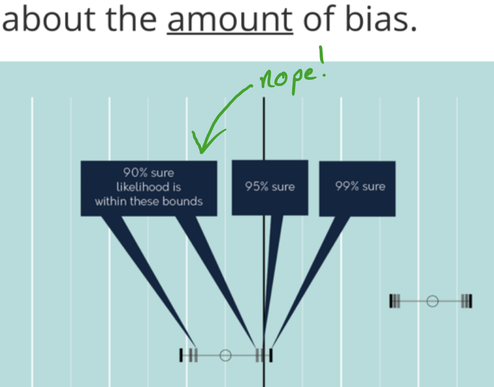
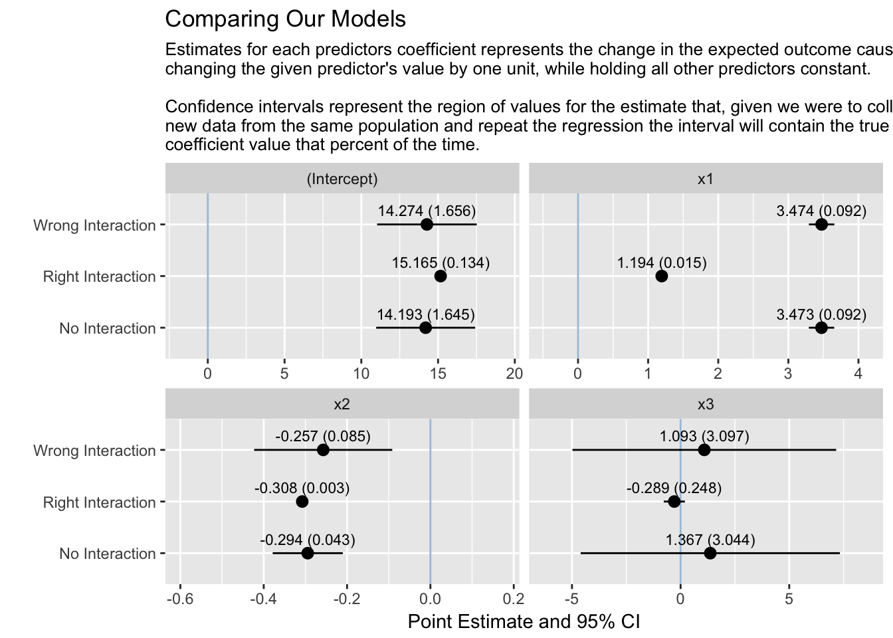

Visualizing Regression Results
Motivation
Recently I was pointed in the direction of a post titled Visualizing Regression on the blog of the popular data-visualization practitioner Stephanie Evergreen (although it is a guest post and not written by Stephanie). In it the authors point out the fact that common regression tables are an all around bad way of reporting the results of a regression. While I whole heartedly agree with the premise there were a few rather large mistakes in the interpretations behind the regression output.
I’ve heard through the grapevine that they are working on a new and improved version so I look forward to that as most of the points made were very valid.

Snippit from afformentioned blog post
I have very strong opinions on issues like this. Having existed in both the data visualization world (I worked as a “data-artist in residence” at a tech start up in California and also as a reporter in the graphics department at the New York Times) and also the statistics world (I have an Bachelors in statistics and am currently working towards my PhD) how to properly visualize non-trivial statistics are the things that keep me up at night.
statisticians like to complain abt people misinterpreting stat results, maybe we should design tools well enough so that will never happen.
— Nick Strayer (@NicholasStrayer) December 16, 2016
I firmly believe that in order to make a truly great visualization you must be utterly familiar with the underlying mechanisms behind what you are visualizing. Pretty regression results are absolutely what we should shoot for; aesthetically pleasing representations of data make the viewers more likely to engage and remember what is actually happening in the data. That being said, the first and most important thing to do is make sure your visualization is utterly truthful to the true meaning of the data/statistics it is visually encoding.
 I believe that if we represent the true meaning of the statistics the beauty will follow naturally.
I believe that if we represent the true meaning of the statistics the beauty will follow naturally.
This is not an easy task at all. I think there are two main reasons why regression tables are still used so much. One: a lot of the time the person reading the table is a statistician and has gone through a terrible amount of school to be able to look at the rows and columns and understand what they mean. Two: making a better representation is hard and not the primary focus of most statisticians.
Between my work experiences, research and classwork I have visualized a lot of regression outputs and, while I have never had the pleasure of doing a full proper study into effectiveness of different representations, I have developed a style that I believe helps immediately impart the important results from your model(s). This means representing effect size and uncertainty, while also without putting any p-values explicitly into the result, showing statistical significance. Also, due to the fact that sometimes people (see statisticians) just want the no-nonsense precision of a table, the raw numbers are in there as well. I am not saying this is the best way (or even a particularly good way) but I do believe it’s better than what I see in 95% of papers/reports I read.
My Solution
If I’m going to show you a regression result we better have some context of what we’re modeling. In my opinion the best way to understand context is make that context yourself: simulation.
Data:
Next we generate some data. We will make our outcome y be a function of three predictor variables x1, x2 and x3. We also have thrown in a nice interaction term between x1 and x3 for some drama.
num_obs <- 200
my_cool_data <- data_frame(
x1 = rnorm(num_obs, mean = 1, sd = 10),
x2 = rnorm(num_obs, mean = 1, sd = 20),
x3 = runif(num_obs),
y = 10 + 1.2*x1 + -.312*x2 + 0*x3 + 5*x1*x3 + rnorm(num_obs, mean = 5)
)This is a contrived example but it (should) guarantee we get interesting results in our models.
Fit Models:
Now that we have our data we can fit a plain (and wrong) linear regression to it.
no_interaction <- lm(y ~ x1 + x2 + x3, data = my_cool_data)Now let’s visualize this model’s results.
nviz::regression_viz(no_interaction, plot_title = "My Simple Model")Okay, so from this plot we can rapidly see that all of our coefficient estimates are statistically significant at an alpha = 0.05 level (none of the 95% confidence intervals overlap with the vertical line at 0), we also note that the intercept term’s interval contains the true value (10), but the x1 coefficient is confident that it’s value is much higher than it truly is (point estimate of 3.6 vs truth of 1.2). Overall this is a simple model and the results are simple (see not that interesting).
Personally I find the most important aspect of this chart to be the descriptions above it. Reminding the viewer what the true interpretation of a coefficient and a confidence interval are (something statisticians have to do themselves regularly) is massively important as to not misguide them.
Another task very frequently done in statistics/ data science is the comparison of multiple models to each other. Let’s fit two more models to our data and compare them with our first model.
# fit two models with interaction terms in them
wrong_interaction <- lm(y ~ x1 + x2 + x3 + x2:x3, data = my_cool_data)
right_interaction <- lm(y ~ x1 + x2 + x3 + x1:x3, data = my_cool_data)
# bundle all our models into a named list
my_models <- list(no_interaction, wrong_interaction, right_interaction )
names(my_models) <- c("No Interaction", "Wrong Interaction", "Right Interaction")
# send that list to our plotting function.
nviz::regression_viz(my_models, plot_title = "Comparing Our Models")
Another note, this is not really a fair comparison. When we compare model coefficients in almost every scenario we would want all of the models to contain exactly the same terms as then the inference on them will be comparable. For instance you would compare a model done with Lasso penalization to a non-penalized model with the same predictors to see the extent of shrinkage on your coefficients. I recognize the irony in attempting to demonstrate a statistically sound practice by using statistically unsound demonstrations.
Looking at this chart you can immediately see that the confidence intervals for the correct model “right interaction” are much smaller than the other models. This makes sense as our model was set up to perfectly match the data generation (aka something that never happens). We can also see that while the other models give highly significant results for the covariate x3 the correct interaction model correctly identifies it as statistically zero. Also, x1’s effect is significantly attenuated towards zero. Both of these are due to the unplotted interaction coefficient absorbing a lot of the effect that the other models didn’t properly account for.
How to make it better
Like I said before I realize this plot could be way better. The immediate things that jump out to me about it are:
- It’s the same dot and line style that everyone uses. I do wish I knew how to visualize frequentest uncertainty better. It’s a tough issue and attempts to simplify it often get it wrong (see the blog post from the start of this.) The truth is frequentest confidence intervals make absolutely no statement about probabilities in them, it’s just an interval that should somewhere within it contain the true value if the experiment was repeated a ton of times. This carries into the next point…
- There are so many words! Again, yes, I know and I don’t like it. Ideally a visualization would just impart these characteristics to the viewer, but I am not clever enough to have figured out how to do that with regression models. Ultimately the math behind a point estimate or a confidence interval is non-trivial and sometimes you have to read to put yourself into the correct mind-frame to interpret the following picture.
- Include the other numbers. Yes, a regression is not just its coefficient estimates. I do think that the main trouble spots for interpretations lie in these estimates though. That being said, I would like to develop a whole-sale, all the info you desire, visual representation of model performance including values like the R squared value and various performance indices like AIC and BIC.
Further
As you may have noticed, this is simply a function I called. It is a function in my personal R package nviz. Currently it is only on github but it can be installed using devtools with devtools::install_github('nstrayer/nviz').

Randomly walking my way though a career in statistics